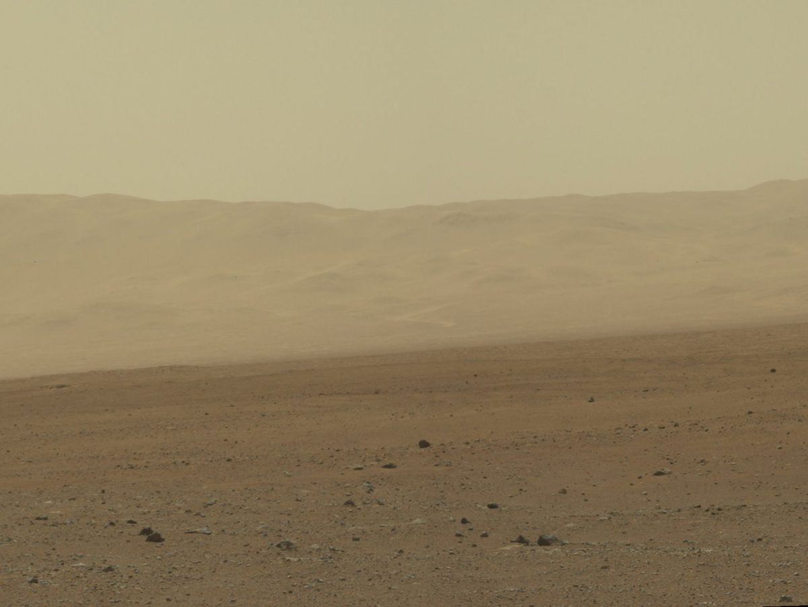
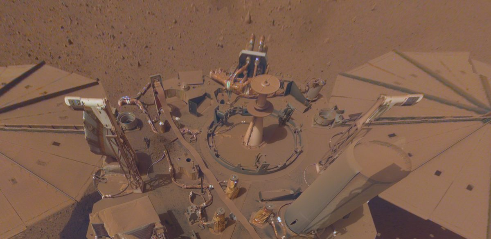

지구
01
SIGNAL DELAY
지구의 답은 늦게 와요
지구까지 신호가 가는 데만 편도 3~22분. 비상 상황에서 지구의 지시를 기다릴 수 없어요.
지구 통신 두절 · 전역 먼지폭풍 접근 중
먼지폭풍이 해를 가리고 지구와의 통신이 끊겨도,
당신의 거주구는 버틸 준비가 되어 있나요?
화성의 재난은 예고 없이 오지만, 준비는 미리 할 수 있어요.BLACK-OUT : MARS · 화성 정착 시대를 가정한 시연용 서비스
WHY BLACK-OUT : MARS
01
지구의 답은 늦게 와요
지구까지 신호가 가는 데만 편도 3~22분. 비상 상황에서 지구의 지시를 기다릴 수 없어요.

02
바깥에서는 숨을 쉴 수 없어요
화성의 기압은 지구의 0.6%, 공기의 95%가 이산화탄소예요. 거주구 벽 하나가 생명선이에요.

03
먼지가 해를 가려요
행성 전체를 덮는 먼지폭풍은 몇 주에서 몇 달 이어져요. 2018년엔 태양광 로버 오퍼튜니티가 그대로 멈췄어요.
그래서 경보가 울리기 전에, 혼자서도 버틸 준비를 함께 해요.
화성 생존력 테스트
질문 10개에 답하면 나의 화성 생존 점수와
거주구에 꼭 필요한 준비물을 알려 드려요.
응답은 이 브라우저에만 저장되며 서버로 전송되지 않습니다.
나의 결과
재난 행동수칙
경보가 울리면 지구에 물어볼 시간이 없어요.
순서대로, 침착하게 움직여요.
국제우주정거장(ISS)의 실제 비상 대응 순서(화재·기압 손실·유독 대기)와 NASA가 공개한 화성 환경 자료를 바탕으로 만든 시연용 행동수칙이에요. 실제 거주구에서는 기지 관제의 안내를 먼저 따르세요.
거주구 맞춤 키트
돔에 사는지, 지하에 사는지, 궤도에 사는지에 따라
필요한 장비가 달라요.
※ 표시된 가격은 MVP 시연용 가상 가격이며 실제 판매가가 아닙니다.
GALE 정착지 지도 · 맞춤 키트
거주구를 고르고 재난만 선택하세요. 정착지와의 거리에 맞춰 필요한 물품과 수량을 계산해요.
기지 관제 상황판 불러오는 중…
오프라인 비상 카드
종이 카드로 뽑아 해치 옆에 붙여 두세요.
기지망이 끊기면 이 사이트에 들어오지 못해요.
미리보기 · 실제 출력과 같아요 (A4 2장)